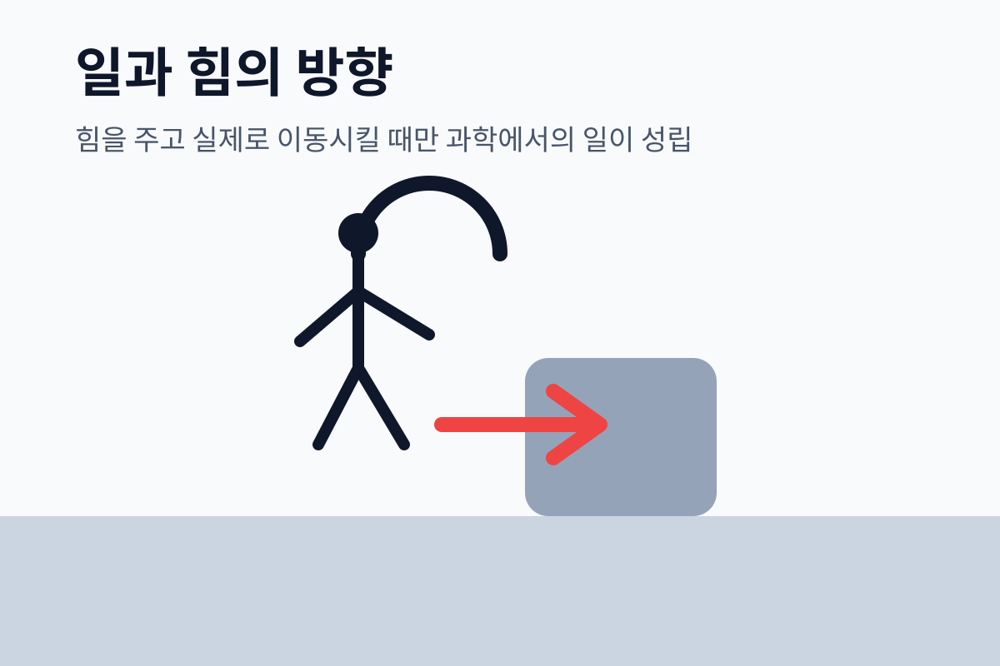

2026학년도 중학교 3학년 과학 • 물리 III-2-01
과학에서의 일이란?
제 10강: 일과 에너지
비상 교과서 III단원 2장: 과학에서의 일
처마에서 떨어지는 빗방울의 에너지는 어디에서 올까요?

지도서 핵심 질문
빗방울이 떨어질 때 중력이 빗방울을 아래로 잡아당기고, 빗방울도 아래로 이동합니다.
과학에서의 "일"
힘이 작용하고, 물체가 힘의 방향으로 이동할 때 일을 했다고 합니다.
W = F × d
오늘의 목표
중력이 한 일을 계산하고, 이 일이 에너지 변화와 어떻게 연결되는지 설명합니다.
일의 정의
W = F × d
일(J) = 힘(N) × 힘 방향으로의 이동 거리(m)
W (일)
단위: J (줄, Joule)
1 J = 1 N·m
F (힘)
단위: N (뉴턴)
물체에 가한 힘의 크기
d (이동 거리)
단위: m (미터)
힘의 방향으로 이동한 거리
예제
10 N의 힘으로 물체를 5 m 밀었다면?
W = 10 N × 5 m = 50 J
일의 단위: 줄 (J)
1 J = 1 N × 1 m
1 뉴턴의 힘으로 물체를 1 미터 이동시킬 때 한 일의 양
감을 잡아보자
- • 100 g 물체를 1 m 들어 올리는 일 ≈ 1 J
- • 사람이 계단 1칸 오르는 일 ≈ 300 J
- • 자동차 엔진 1초 출력 ≈ 수만 J
계산 연습
① 30 N의 힘으로 3 m 이동:
W = 30 × 3 = 90 J
② 50 J의 일을 5 m 거리에서 한 힘:
F = 50 ÷ 5 = 10 N
일을 한 경우 vs 하지 않은 경우
✅ 일을 한 경우
상자를 밀어 이동시킴
힘 방향 = 이동 방향 → W = Fd ✓
역기를 위로 들어 올림
힘 위 방향, 이동 위 방향 → W = mgh ✓
기관차가 화물 열차를 끌어당김
힘 = 이동 방향 → W = Fd ✓
❌ 일을 하지 않은 경우
벽을 아무리 밀어도 안 움직임
d = 0 → W = F × 0 = 0 ✗
책을 들고 수평으로 걸어감
힘(위) ⊥ 이동(수평) → 이동 방향 성분 = 0 ✗
원운동 중 구심력
힘(중심) ⊥ 이동(접선) → 일 = 0 ✗
핵심: 일이 0이 되는 두 가지 조건
① 이동 거리 d = 0 (물체가 안 움직임) ② 힘과 이동 방향이 수직
일과 에너지의 관계
물체에 한 일의 양만큼
물체의 에너지가 변한다
일을 해주면
에너지가 증가한다
에너지란?
"일을 할 수 있는 능력"
단위: J (줄)
일을 받으면
에너지가 감소한다
에너지의 종류
- • 운동 에너지: 움직이는 물체
- • 위치 에너지: 높이에 있는 물체
- • 화학 에너지, 열에너지, 빛에너지...
예시
물체를 100 J 일로 들어 올리면
위치 에너지 100 J 증가
물체에 50 J 일을 하면
운동 에너지 50 J 증가
일 계산 연습
문제 1
질량 5 kg인 물체를 2 m 높이로 들어 올렸다. (g = 10 m/s²)
F = mg = 5 × 10 = 50 N
W = 50 × 2 = 100 J
문제 2
20 N의 힘으로 끌어 300 J의 일을 했다. 이동 거리는?
d = W ÷ F = 300 ÷ 20
d = 15 m
문제 3
물체를 4 m 밀어 80 J의 일을 했다. 가한 힘은?
F = W ÷ d = 80 ÷ 4
F = 20 N
문제 4
벽을 30 N으로 밀었으나 움직이지 않았다. 한 일은?
d = 0 → W = F × 0
W = 0 J
오늘 배운 것 정리
과학에서의 일
W = F × d
힘의 방향으로 물체가 이동했을 때만 성립
단위: 줄(J)
1 J = 1 N × 1 m
일의 양을 나타내는 단위
일이 0인 경우
① 이동 거리 = 0 (벽 밀기)
② 힘과 이동 방향이 수직 (책 들고 걷기)
에너지
"일을 할 수 있는 능력"
일의 양 = 에너지 변화량 (단위: J)
형성 평가 01
15 N의 힘으로 물체를 힘의 방향으로 4 m 이동시켰다. 한 일의 양은?
형성 평가 02
다음 중 과학에서 "일을 하지 않은" 경우는?
형성 평가 03
에너지에 대한 설명으로 옳은 것은?
오늘 수업 마무리
오늘 배운 핵심 3가지
W = F × d (힘 방향으로 이동 시만 성립)
단위: J (줄) = N × m
이동 없거나 힘⊥이동 → W = 0
다음 차시 예고: 11강 중력 위치 에너지
높이 있는 물체는 얼마나 많은 에너지를 가질까요?
Ep = mgh — 질량과 높이의 마법!